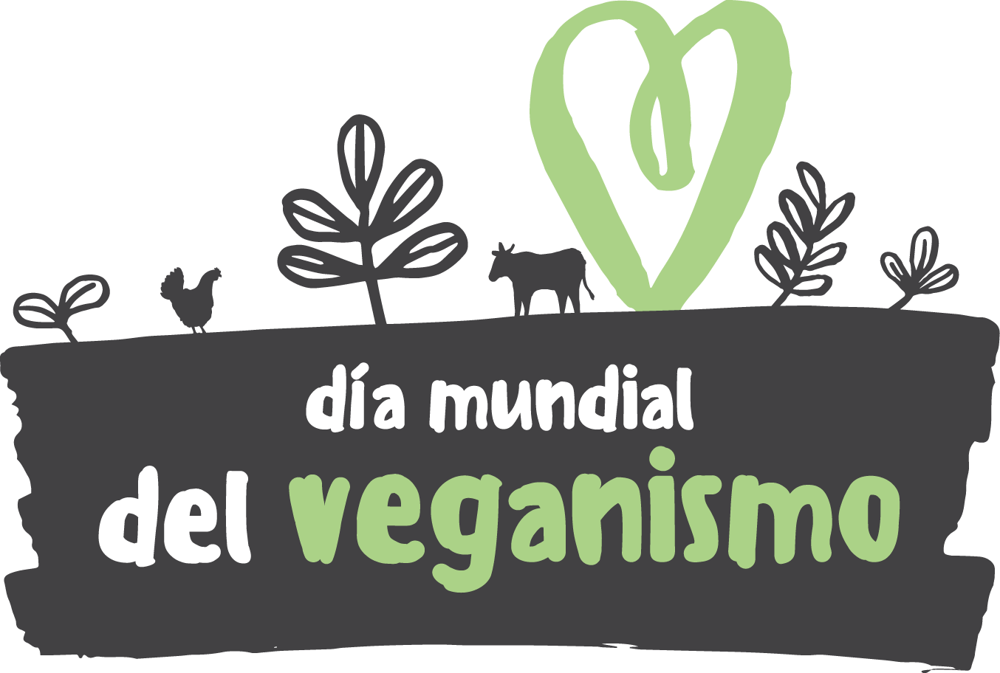
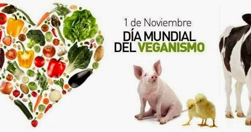
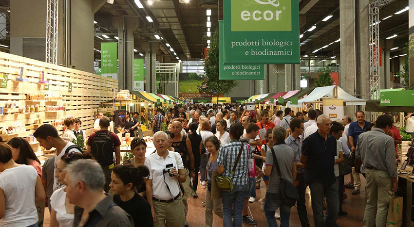

Dia mundial del veganismo
|  |  |  |
| El 1 de noviembre se celebra en todo el mundo el Día Mundial del Veganismo la fecha conmemora desde 1994 al creador del término y la fundación de la Vegan Society, en 1944: a una dieta libre de productos y subproductos animales, motivado por la compasión y la búsqueda de una alimentación saludable, que considera éticamente a los animales. | Con motivo de la celebración se hacen festivales aluciendo a el amor a los animales y dejar conciencia. | |
Algunos festivales veganos
Vegan Fest Brazil (Brasil)
Brasil es sol, es samba y es buenos alimentos. Congresso Vegetariano Brasileiro, que tiene lugar entre finales de agosto y principios de septiembre cada dos años. Conferencias, exposiciones, demostraciones de cocina, actividades deportivas dirigidas por atletas veganos, comidas populares. Todo esto y mucho más es lo que promete este evento brasileño.
World Veg Festival (San Francisco, EE.UU.)
El World Veg Festival se celebra también en otoño, en este caso, en el Golden Gate Parkde San Francisco para los amantes de la comida vegetariana y/o vegana. Ponentes, expositores, shows de cocina y otras muchas actividades. Necesitarás los cinco sentidos para disfrutar del World Veg Festival.
VegFest Oahu (Hawaii, Estados Unidos)
El VegFest Oahu, uno de los festivales vegetarianos y/o veganos más conocidos de Hawai. Su eslogan promete desde el minuto uno: celebra, aprende, prueba. No se nos ocurre mejor excusa para coger un avión ahora mismo y volar a uno de los festivales veganos con mejor pinta del mundo que, no sin vista, se celebra en un auténtico paraíso en la Tierra.
Tulum Vegan Fest (México)
También en el paraíso mexicano un sólido evento que ya va por su quinta edición. Comida, actividades, música, talleres, mar, selva y cultura es lo que de él puedes esperar. Una cita para aprender y para celebrar que no deja de crecer.